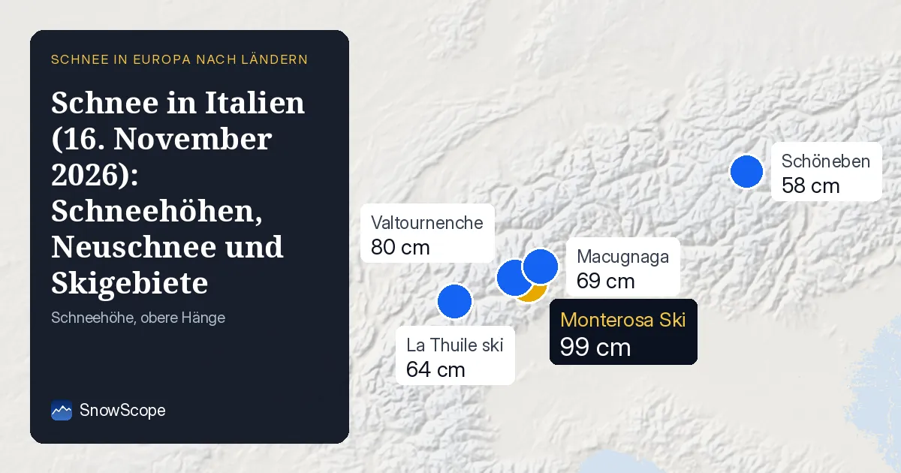

Schnee in Italien (16. November 2026): Schneehöhen, Neuschnee und Skigebiete
Die weiße Fläche in Italien liegt heute bei etwa 21.210 km², kaum anders als gestern. Etwa 23 % der kartierten Berge und Hügel des Landes sind bedeckt.
Die Live-Schneeprognose für Monterosa Ski in der SnowScope-AppSchneehöhen, Pulverschnee-Alarme und 3D-Karte, gratis.
Schneebedeckung heute
Für eine weiße Landschaft: ab 1.700 m aufwärts. Vor einer Woche waren es 22.490 km²; seitdem sind 1.280 km² weggeschmolzen.
| Skigebiet | Heute | Normal an diesem Tag | Anteil am Normalwert |
|---|---|---|---|
| Monterosa Ski | 18 cm | 13 cm | 138 % |
| Valtournenche | 15 cm | 15 cm | 100 % |
| Macugnaga | 37 cm | 12 cm | 308 % |
| La Thuile ski | 26 cm | 23 cm | 113 % |
| Schöneben | 10 cm | 18 cm | 56 % |

Schneehöhe nach Höhenlage
Nach Höhe ergibt sich folgendes Bild: zwischen 1.000 und 1.500 m im Schnitt unter 1 cm, 11 % bedeckt; zwischen 1.500 und 2.000 m im Schnitt 1 cm, 56 % bedeckt; zwischen 2.000 und 2.500 m im Schnitt 5 cm, 89 % bedeckt; über 2.500 m: im Mittel 17 cm (99 % weiß).

Was das auf der Piste bedeutet
Neuschnee auf der Unterlage verspricht weiche Schwünge oben, unten bleibt es fleckig.
Die Vorhersage im Blick behalten: Der kommende Schnee kann das Bild schnell ändern.
Wo der Neuschnee fiel
In den letzten 72 Stunden fiel der meiste Neuschnee, bis zu 16 cm, über the Aosta Valley, the Piedmont Alps und der zentrale Apennin.
Allein die letzten 24 Stunden brachten bis zu 9 cm.
Rund 5.800 km² bekamen mindestens 5 cm.
Was kommt
Schnee ist angesagt: bis zu 50 cm in drei Tagen, bis zu 75 cm innerhalb von sieben Tagen.
Der Dienstag, 17. November sticht heraus, mit bis zu 25 cm an einem Tag.
Die zweite Woche bringt bis zu 32 cm dort, wo es am meisten schneit.
Die Auswahl fürs Wochenende
Monterosa Ski liegt vorn mit 99 cm im oberen Bereich.
Danach: Valtournenche (80 cm), Macugnaga (69 cm), La Thuile ski (64 cm) und Schöneben (58 cm).
Monterosa Ski bekam in drei Tagen 8 cm und könnte bis Donnerstag, 19. November weitere 31 cm dazubekommen.
Valtournenche bekam in drei Tagen 10 cm und könnte bis Donnerstag, 19. November weitere 39 cm dazubekommen.
Heute sind 123 von 237 Skigebieten in Italien weiß.
Tipps für Skifahrer
- Nach klarer Nacht ist der Schnee morgens hart: an Südhängen auf die Sonne warten.
- Über der Waldgrenze kann der Schnee verfrachtet sein: Grate im Blick behalten.
- Vor dem Gelände abseits der Piste den lokalen Lawinenbericht lesen.
Zu diesen Zahlen
Die Schneehöhen der Skigebiete sind der meiste Schnee in den oberen Hängen am angegebenen Tag; es sind Schätzungen für eine Fläche, keine Messung an einem Punkt. Prognosen können sich ändern. Lies vor dem Freeriden immer den offiziellen Lawinenlagebericht.
Diesen Bericht zitieren
Für Forschung, Lehre oder Presse: Zahlen und Grafiken sind unter CC BY 4.0 mit dieser Quellenangabe frei nutzbar.
SnowScope (2026), Schnee in Italien (16. November 2026): Schneehöhen, Neuschnee und Skigebiete, https://snowscope.app/blog/de/2026/11/italy-snow-report-16-november-2026.html, abgerufen am 2026-11-16
SnowScope (Atlas Labs). (2026, November 16). Schnee in Italien (16. November 2026): Schneehöhen, Neuschnee und Skigebiete. SnowScope snow reports. https://snowscope.app/blog/de/2026/11/italy-snow-report-16-november-2026.html
BibTeX
@misc{snowscope2026italysnowreport16novembe,
author = {{SnowScope (Atlas Labs)}},
title = {Schnee in Italien (16. November 2026): Schneehöhen, Neuschnee und Skigebiete},
year = {2026},
month = nov,
howpublished = {\url{https://snowscope.app/blog/de/2026/11/italy-snow-report-16-november-2026.html}},
note = {Published 2026-11-16 20:42 UTC; accessed 2026-11-16}
}· CC BY 4.0 · Methoden, Daten und Werkzeuge →
Monterosa Ski: Schnee und Temperatur nach Höhe, dieser Winter vs letzter (Werkzeuge) →
Monterosa Ski folgen
Gratis: eine Nachricht, wenn Neuschnee kommt, und jeden Morgen die Vorhersage.